|
Recorte o corpo principal do navio. Observe que precisará retirar 3 partes da base, deixando as aberturas.
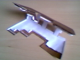
Dobre as laterais internas da murada (indicadas com as setas). Dobre para fora as abas para colagem do convés. Estas abas estão desenhadas com linhas tracejadas, mas a pintura avança ligeiramente sobre estas linhas tracejadas. Dobre nas linhas tracejadas. Rebata e cole as muradas internas, nas duas laterais. Cuidado para manter as abas dobradas para fora.
Recorte e dobre (da mesmam forma) a parte traseira do corpo. Cole-a ao corpo principal. Rebata e cole
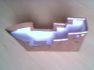
a murada interna depois de colar totalmente a parte traseira ao corpo.
Junte a frente das duas laterais do corpo.
Com um estilete, retire cuidadosamente os círculos marcados com asteríscos (*) nas peças do convés e mas gáveas. Por eles passarão os mastros.
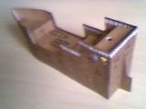
Recorte e dobre as 4 partes do convés. Cole o convés de número 4 (traseiro) inicialmente. Tome muito cuidado e aperte ligeiramente as laterais para manter o navio alinhado. Use um palito para fixar melhor as abas, pressionando-as levemente por baixo. Cole agora o convés número 3, tendo o mesmo cuidado. Cole o convés número 1 (frente), observe que ao fazer esta montagem você estará dando a forma do navio. Agora cole o último convés (número 2).
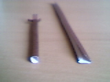
Recorte, dobre e cole o leme. Deixe as abas dobradas para fora. Agora cole estas abas na traseira do navio, usando a linha vertical como guia.
Recorte os mastros, observando as pequenas abas nas suas bases, que devem ser separadas e dobradas para fora. Para montá-los tenha paciência e cuidado.
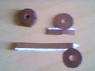
Inicialmente dobre a aba principal para dentro. Depois dobre o mastro ao meio, alinhando as duas laterais. Passe cola por toda a aba e junte as laterais, iniciando por uma das extremidades. Depois de apertar bem, mas não esperando muito tempo, insira a ponta de um palito em uma das extremidades, apertando a lateral, para que a peça fique na forma cilíndrica.
De maneira um pouco parecida, monte os 3 cestos da gávea.
 Recorte as peças, separando as pequenas abas, que devem ser dobradas para dentro. Cole as duas extremidades dobrando a lateral ao meio. Depois disto, acerte a forma circular da figura e cole o círculo superior.
Recorte as peças, separando as pequenas abas, que devem ser dobradas para dentro. Cole as duas extremidades dobrando a lateral ao meio. Depois disto, acerte a forma circular da figura e cole o círculo superior.
Veja que o menor mastro tem as abas da base pintadas. Ele será colocado depois na frente (proa) do navio. Agora, usando as aberturas da base do navio, coloque os outros quatro mastros, passando-os pelos orifícios do convés,
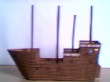
deixando as abas para baixo. Observe que o mastro número 3 é menor que os demais. Uma a uma, abra as abas das bases dos mastros e coloque bastante cola. Cole os mastros na base (na posição correspondente ao seu número). Preocupe-se bastante em deixar o mastro o mais alinhado possível.
Ao colá-lo, observe pela lateral e pela frente. Quanto mais cola usar, mais fácil será acertar seu alinhamento, deslizando sua base. Coloque o navio sobre uma base plana e pressione o mastro contra esta base. Antes de colar o próximo, certifique-se que o mastro está bem colado.
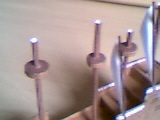
Recorte e cole a base do navio. Inicie colando a parte traseira (popa) e depois preocupe-se com a frente, pois ela irá tomar a forma definitiva.
Encaixe as cestas da gávea nos mastros (1, 2 e 3). Não use cola, deixando-as livres, pois suas posições serão definidas pelos cordames.
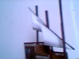
Recorte as duas velas latinas (triangulares). Dobre as pequenas abas na posição definida pela seta, rebatendo-as e colando-as. Molde as velas, envergando-as para tomarem a forma arredondada. Cole as velas no centro dos mastros (3 e 4) usando as abas. Nesta etapa use bastante cola.
Recorte os dois cordames dos matros 3 e 4.
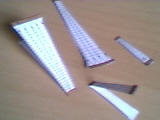
Para montá-los, dobre-os ao meio e junte suas laterais, colando-as. Cole as partes maiores nas muradas e as menores na cesta da gávea do mastro 3 e no topo do mastro 4. Coloque estes dois cordames no lado esquerdo do navio.
Agora recorte e monte os 4 cordames dos mastros 1 e 2. Da mesma forma, cole os cordames maiores unindo as muradas aos cestos de gávea. Os menores devem ficar entre as gáveas e o topo dos mastros. Cole estas peças no lado direito do navio.
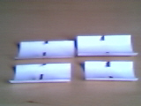
As velas chamadas redondas, que tem na folha impressa formato retângular, são 4 e ficarão nos mastros 1 e 2. Recorte-as. Agora dobre e cole as duas abas de cada uma das velas, como foi feito nas velas latinas. Depois envergue as 4 velas, deixando-as com uma forma arredondada (meio cilíndro). Cole as velas maiores nas partes inferiores dos mastros, abaixo das gáveas. As menores deverão ser coladas acima.
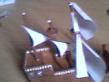
Os mastros devem receber as bandeiras nos seus topos. Recorte as quatro bandeiras. Para montá-las, dobre-as ao meio e, iniciando pelas pontas, cole-as unindo as duas faces. IMPORTANTE:Não cole a parte pintada de marrom. Esta parte, que é a ponteira do mastro, deve ser ligeiramente apertada, formando um pequeno cone. Este cone deve ser encaixado e colado no interior do topo do mastro.
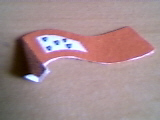
Resta agora montar apenas o pequeno mastro na proa (frente) do navio. Recorte a ponteira e dobre-a, de modo a formar um pequeno cone. Este cone deve ser encaixado e colado na ponta do mastro, de maneira parecida como foi feito com as bandeiras.
Agora deite o pequeno mastro horizontalmente na proa do navio.
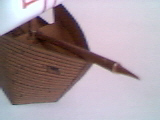
Cole as abas da base (pintadas de marrom) na base do mastro 1, envolvendo-a. Cole também na parte que o pequeno mastro toca a ponta do navio.
|